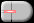
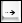

Download "shiftzoom.js" and include it into your webpages HEAD section.
<script type="text/javascript" src="shiftzoom.js"></script>
// only if the cursor images for IE are not in the current path
<scriptscript type="text/javascript">
shiftzoom.defaultCurpath='images/cursors/';
</script>
To add shiftzoom just set the event onload="shiftzoom.add(this);" to a div surrounded image.
<div>
<img onLoad="shiftzoom.add(this);" width="356" height="205" ...>
</div>
Mouse- and Keyboard-driven handling:
|
zoom in |  | zoom in | zoom in* | |||||||
|
zoom out | zoom out | |
zoom out* |
 |
pan left | |
pan left (fast) | |
pan left (slow) | ||||||
|  | pan right | |
pan right (fast) | |
pan right (slow) | ||||||
 |
pan up | |
pan up (fast) | |
pan up (slow) | ||||||
| pan down | |
pan down (fast) | |
pan down (slow) | |||||||
 |
zoom in* |  |
zoom in (fast) |  |
zoom in | ||||||
 |
zoom out* |  |
zoom out (fast) |  |
zoom out |
shiftzoom.defaultFading = true; //BOOLEAN startup image fadingshiftzoom.defaultButtons = true; //BOOLEAN left top buttonsshiftzoom.defaultNozoom = false; //BOOLEAN disable zooming featureshiftzoom.defaultBicubic = false; //BOOLEAN enable bicubic image interpolation for IE7+shiftzoom.defaultWheelinvert= false; //BOOLEAN makes zoom behaviour identical with Google Mapsshiftzoom.defaultWheelstep = 20; //INT/FLOAT 0-100 (%) wheel step size percentageshiftzoom.defaultZoom = 0; //INT/FLOAT 0-100 (%) zooming percentageshiftzoom.defaultXpos = 50; //INT/FLOAT 0-100 (%) horizontal positionshiftzoom.defaultYpos = 50; //INT/FLOAT 0-100 (%) vertical positionshiftzoom.defaultOpacity = 70; //INT 0-100 (%) zoom button opacityshiftzoom.defaultMillisec = 30; //INT 5-100 zoom interval delayshiftzoom.defaultIntitle = 'zoom in'; //STR zoom in button title textshiftzoom.defaultOuttitle = 'zoom out'; //STR zoom out button title textshiftzoom.defaultInfoblock = '<dl>...<\/dl>'; //STR Info/Help block contentshiftzoom.defaultCurpath = ''; //STR cursor path (*.cur) IE onlyshiftzoom.defaultLowres = ''; //STR lowres image (dimension equals elements width and height)shiftzoom.defaultIcons = null; //OBJ icon array (see shiftzoom.construct)shiftzoom.defaultShowcoords = false; //BOOLEAN show coordinatesshiftzoom.defaultRelativecoords = false; //BOOLEAN relative instead of absolute pixel coordinatesshiftzoom.defaultPixelcoords= true; //BOOLEAN show Pixel coords instead of Lat/Lonshiftzoom.defaultPercentcoords=false; //BOOLEAN show percentage instead of Lat/Lon/Pixel coordinatesshiftzoom.defaultForcetouchui=false; //BOOLEAN forces touch UI over the mouse UI if both availableshiftzoom.defaultOverview = false; //BOOLEAN show overviewshiftzoom.defaultOvsfact = 25; //INT 10-50 (%) overview size factorshiftzoom.defaultOvaopac = 75; //INT 0-100 (%) overview area opacityshiftzoom.defaultOvacolor = 'red'; //STR overview area css colorshiftzoom.defaultOvbcolor = 'white'; //STR overview border css colorshiftzoom.defaultOvborder = ''; //INT 0-20 (px) or "" overview border widthshiftzoom.add(image[, options]);image == div surrounded imageoptions e.g. {overview: true, opacity: 32, ...}fading == BOOLEAN true or false Default: truebuttons == BOOLEAN true or false Default: truenozoom == BOOLEAN true or false Default: falsebicubic == BOOLEAN true or false Default: falsewheelinvert== BOOLEAN true or false Default: falsewheelstep == INT/FLOAT 0 - 100 Default: 20zoom == INT/FLOAT 0 - 100 Default: 0xpos == INT/FLOAT 0 - 100 Default: 50ypos == INT/FLOAT 0 - 100 Default: 50opacity == INT 0 - 100 Default: 90millisec == INT 5 - 100 Default: 40intitle == STRING Default: 'click or press shift key to zoom in'outtitle == STRING Default: 'click or press alt key to zoom out'infoblock == STRING Default: '<dl>...<\/dl>'curpath == STRING Default: ''lowres == STRING Default: '' (faster zooming)icons == OBJECT Default: null (icon array)showcoords == BOOLEAN true or false Default: falserelativecoords == BOOLEAN true or false Default: falsepixelcoords== BOOLEAN true or false Default: truepercentcoords==BOOLEAN true or false Default: falseforcetouchui==BOOLEAN true or false Default: falseoverview == BOOLEAN true or false Default: trueovsfact == INT 10 - 50 Default: 25ovaopac == INT 0 - 100 Default: 75ovacolor == STRING '#ffaa00' or 'orange' Default: 'red'ovbcolor == STRING '#0000ff' or 'blue' Default: 'white'ovborder == INT 0 - 20 Default: automatic
FLOAT|INT = shiftzoom.get(image, ['maxzoomx'|'maxzoomy'|'maxwidth'|'maxheight']);BOOLEAN = shiftzoom.get(image,'playing');OBJECT = shiftzoom.get(image,'currentxyz');x=xpos, y=ypos and z=zoom values as INT/FLOAT 0-100 (%))FLOAT = shiftzoom.version;STRING = shiftzoom.released;
shiftzoom.set(image, ['buttons'|'overview'|'showcoords'|'relativecoords'|'pixelcoords'|'zoomin'|'zoomout'|'nozoom'], [true|false]);zoomin|zoomout depends on the settings buttons=false and nozoom=false)
shiftzoom.info(image, value);value == innerHTML-block (e.g. '<dl>...<\/dl>')shiftzoom.source(image, value, boolean);value == URI (e.g. 'images/world.jpg')
boolean == fade out/in (true or false)
shiftzoom.lowsource(image, value);value == URI (e.g. 'images/world_lowres.jpg')
shiftzoom.zooming(image, value);value == 0 - 100 (%) default: 0
shiftzoom.moveto(image, x, y);
x,y defaults to 0,0if x or y == INT e.g. 189
then it's interpreted as pixel from within natural image dimensionif x or y == STR e.g. '50%' Pattern: (INT|FLOAT)%
then it's interpreted as percentageif x or y == STR e.g. '-23.057' Pattern: (+|-)(INT|FLOAT)
then it's interpreted as longitude or latitudeshiftzoom.kenburns(image, [x, y, z, s, d, c, a]);x == left position 0 - 100 (%) default: 50y == top position 0 - 100 (%) default: 50z == zomm factor 0 - 100 (%) default: 50e == optional progression 0.0 - 2.0 | 3 default: 1 [< 1 == ease-out | 1 == linear | > 1 == ease-in | 3 == ease-in-out]s == optional animation steps 10 - 100 default: max distance/interval delayd == optional interval delay 10 - 100 default: 30c == optional callback function name (executes on end of animation) default: ''a == optional callback argument (string or number only) default: '' e, s, d set them to false)
shiftzoom.play(image, delay, loop, array, callback);delay == delay between play positions 0 - 100000 millisec. default: 0loop == loop array true or false default: falsearray == two dimensional array with syntax from kenburns [[x,y,z], [x,y,z,e], [x,y,z,e,s], [x,y,z,e,s,d]...]callback == optional function name (executes on stop playing) buttons, showcoords, overview to false and nozoom to true)
shiftzoom.stop(image);shiftzoom.construct(image, object);object e.g. [{x: 52, y: 31, ...},{...}]x == x position relative to images natural width 0 - n (px) Default: 0y == y position relative to images natural height 0 - n (px) Default: 0w == icon width 8 - n (px) Default: 0h == icon height 8 - n (px) Default: 0src == icon #1 image URL Default: ''src2 == optional icon #2 image URL Default: ''pos == optional icon position 0 - 9 Default: 0 (1=left-top, 2=center-top, 3=right-top, 4=center-left, 0/5=center-center, 6=center-right, 7=left-bottom, 8=center-bottom, 9=right-bottom)id == optional icon id Default: ''title == optional icon tooltip text Default: ''href == optional icon link URL Default: ''target == optional icon link target Default: ''
shiftzoom.destruct(image, value);value == STRING (remove named icon)value == BOOLEAN (remove all icons)
shiftzoom.remove(image, value);value == BOOLEAN (reset image to natural dimension)
<img onLoad="shiftzoom.add(this);" ...>shiftzoom.add(document.getElementById('img'));if(typeof $=='undefined') {function $(v) {return(document.getElementById(v));}}shiftzoom.add($('img'));shiftzoom.add($('img'), {fading:false, curpath:'cursors/'});alert(shiftzoom.get($('img'),'maxwidth'));alert(shiftzoom.version);shiftzoom.set($('img'),'overview',false);<button type="button" onclick="shiftzoom.set($('img'),'zoomin',true);"> + </button><button type="button" onclick="shiftzoom.set($('img'),'zoomout',true);"> - </button>shiftzoom.info($('img'),'<p>eat my shorts<\/p>');shiftzoom.source($('img'),'images/world.jpg',false);shiftzoom.lowsource($('img'),'images/world_lowres.jpg');shiftzoom.zooming($('img'),100);shiftzoom.moveto($('img'),'50%','50%');shiftzoom.kenburns($('img'),[25,75,100]);shiftzoom.play($('img'),0,true,[[25,75,100],[0,0,0]]));shiftzoom.stop($('img'));shiftzoom.construct($('img'),[{x:250,y:75,w:48,h:48,src:'icon.png',id:'ico'}]);shiftzoom.destruct($('img'),'ico');shiftzoom.remove($('img'));Shows what "shiftzoom.js" does.
In very old browsers, the script degrades and your visitors won't notice a thing.
Element dimensions should always respect the Aspect Ratio of the image.
iOS (iPod/iPad/iPhone) Resource Limits (Quote):
"JPEG images can be up to 32 megapixels due to subsampling, which allows JPEG images to decode to a size that has one sixteenth the number of pixels. JPEG images larger than 2 megapixels are subsampled—that is, decoded to a reduced size. JPEG subsampling allows the user to view images from the latest digital cameras."
Android zooming (pinch gesture). Currently not, because android emulator do not support multiple finger gestures!
Internet Explorer's image scaling through bicubic interpolation is only available in version 7 and up. So don't expect to much (smooth display) from older browsers like IE 5, IE 5.5, and IE 6. IE needs external cursor images (*.cur).
Operas cursor handling sucks. Opera and Safari 1-2 are unable to interpret style sheet percentages properly and exactly.
Handling javascript mouse events is not a simple thing, because there are inconsistancies in the way different browsers implement mouse events. That's the reason why the response on right mouse button is inconsistent in shiftzoom. The differences in detail:
ShiftZoom.js is distributed under this LICENSE. License permits free of charge use on non-commercial and private web sites only under special conditions (as described in the license). This license equals neither "open source" nor "public domain". There are also Commercial Software Licenses available.
Images used are copyrighted and are used for demonstration only.
cvi.netzgesta.de also visit CVI-lab, S5 Reloaded and AJAX-FilmDB